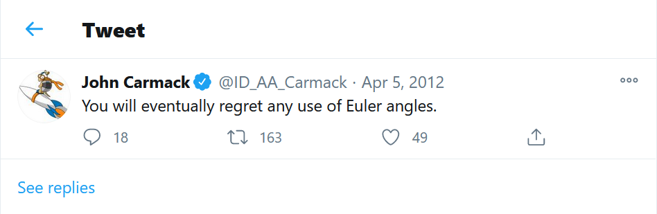

Simple Model Viewer
TL; DR: try it out here
Intro:
In the course of learning low level-ish graphics stuff, everyone reaches a point where they need to work with something a little more sophisticated
than the endless “wax on, wax off” style primitives they intially start with.
This article is just a small write up of what I needed to understand to set up a simple model viewing scene from scratch (ish).
I assume some comfort with your graphics API of choice and don't go into details about how to initilize your rendering pipeline.
Also, it assumes general comfort with matrix and vector math, if you for whatever reason lack conceptual understanding about the matrix transformations or cross products involved, please see this
overly long article I wrote that explains them in gory detail.
There are endless choices for an inital model, a stanford dragon/ bunny, a suzanne monkey, that weird armadillo creature I always seem to see around these days, the list goes on; I think the most cannonical model however, traditionally considered the "Hello, World!" equivalent in graphics, is probably the "Utah Teapot". Personally, it was the model I first saw used to demonstrate the power and flexibility of programmable shaders (check out figure 3.9 in Real Time Rendering 3rd edition), so I just like it. More objectively, I think it's a good starting point as it can project simple shadows on itself and it isn't terrribly ugly even if you don't apply textures to it.
It's hard to imagine, but the mesh data for the original model was actually made by hand by a graphics researcher at the university of Utah, check it out. I'm reminded of a time I asked a better programmer than myself (after coding for a while one day basically according to compiler complaints), what did people do before they had debuggers or things like intellisense and code completion? The curt reply was that they were busy making these assistive tools. Similarly, 3D graphics must have been quite a task before modeling programs were made and I guess the wizard beards of yore were busy making these tools too. I will never complain about unfriendly UI in Blender again (it's free too... what a time to be alive)
Loading a model to work with:
Without further ado, Let's get the mesh data straight from the horse's mouth.
Scroll down to "Test Scenes" and probably start with the lower resolution file for debugging purposes.
So what are we even looking at? After a cursory internet search based on the repeating categories, we find that it's an OBJ file, one of many, many 3D file formats.
From the Wavefront_.obj_file wikipedia page:
"The OBJ file format is a simple data-format that represents 3D geometry alone — namely, the position of each vertex, the UV position of each texture coordinate vertex, vertex normals,
and the faces that make each polygon defined as a list of vertices, and texture vertices”
So each line is a vertex, normal or texture coordinate (starting with v, vn, or vt respectively) and then face lines
representing the interleaved vertex array data (with corresponding indices to the earlier lines).
Be careful while parsing, they're mostly quads but there are triangles in there too.
I will save you some debugging pain, sadly, just copying and pasting the data into a text file to parse it results in extra whitespace at the end of each face line and after every “v” in the vertex lines. This isn't standard formatting and I encourage you to check; just export an OBJ file from your modeling software of choice and you can compare directly. You could compensate for this in your parser, but since it’s an exception, I chose to get rid of this with a quick Python script straight away.
Unfortunately, due to modern browsers’ safety protocols, we can't access the text file directly and will need to set up a secure web server to test and deploy our code. This also means that we'll have to account for asynchronous programming and load this within an XMLHttpRequest call back.
Let's use python again:
For Python 3.x:
python -m http.server
This will serve files from the current directory at localhost under port 8000: http://localhost:8000/
The goal of this exercise isn't to build a totally awesome, general mesh loading framework, so I'll save you the effort of looking at convoluted/ overly complicated code that I wrote to parse an obj file, as I'm sure you can do better, but if you'd like to see my implementation (including the brutal python file) for whatever reason, you can reference it here.
There's nothing special about this vertex array information.
It's no different from the simple primitives you're familar with beyond that instead of like
36 vertices to draw, there are many thousands and instead of the vertex data being set mathematically
(although this is also nice and still extendable) it was set via a 3D modeling program.
Just be sure to define the vertex attributes according to the interleaved data we're getting back from our parser and you're set.
With the appropriate choice of a camera position looking at the world origin and the necessary view and projection matrices, you should be able to feed the vertex shader from the respective attribute and an unshaded utah teapot should be yours. It's so satisfying to see the 3241 vertices coherently exist, even if it's just a solid color
Basic Shading:
Once vertex positions and normals are available in your vertex shader, we can pass them along to be interpolated and introduce basic per fragment surface shading.
I call it shading and not lighting as it's not lighting in a strict sense, but rather carefully designed hacks/ heuristics.
It's hard to believe but these heuristics are all the way from the 1970's. Accordingly, tutorials for them are pretty well played out.
I don't think any of the numerous tutorials are wholly original presentations and I don't want to contribute to any more noise, especially for things I merely implemented.
Please see these two useful resources I used to make my simple shading model.
learnwebgl.brown37.net
learnopengl.com.
In broad strokes, diffuse light is imitated with clamped
Lambertian reflectance, so it's proportional to the clamped cosine between the normal and light vector.
and specular highlights are modeled either by the Phong reflection model
(check out the derivation given by
learn.brown37.net
(the reflection vector is calculated by hand for the interpolated fragment position. Note: there is a hardware acclerated function reflect(vec3 pos) for this very purpose which is what is used in most tutorials I think)
or the Blinn-Phong reflection model (substituting the relationship between the reflection vector and the viewing vector with the "halfway" vector, what should be called the normal-viewing-bisector)
I don't think I can do a better job in explaining these concepts than these guys, so I'll leave you with them, with one small caveat:
I don't expect any one source to explain everything (no one knows everything and
you're only enrichened by being forced to drill down on your own from many different resources)
but I do expect the fundamentals for lower level work to explain foundational equations/ steps/ conceptual perspectives and unfortunately the halfway vector is just baldly presented to you in the linked tutorials.
(This is was also true everywhere else I looked (wikipedia, Peter Shirley's excellent Fundamentals of Computer Graphics (4th), Real Time Rendering (5.7 in third edition, clearly too trivial for long wizard beards.)
It wasn't obvious to me at first blush how the halfway vector took the expression that it did. If you try it out naively numerically it clearly fails. (you can drag the vector points around in the graph)
And it's equally not obvious if you try to derive it geometrically.
For your benefit: For any two vectors $$ \vec{a} , \vec{c} $$
their angle bisector is defined as $$\vec{b} = \| \vec{a} \| \vec{c} + \| \vec{c} \| \vec{a}$$
Here are both algebraic and geometric proofs, I would recommend trying out the algebraic one, it's straight forward and it's not dependent on any lemmas or anything.
So for the case of our light and viewing position vectors: $$ \vec{l} , \vec{v} $$
$$\vec{h} = \| \vec{l} \| \vec{v} + \| \vec{v} \| \vec{l}$$
If we say that both light and viewing vectors are both normalized then their magnitude is one.
$$\implies \vec{h} = \vec{v} + \vec{l}$$
If we then define $$ \vec{H} $$ as the normalized version of that, it exactly equals the given expression for the halfway vector.
$$\vec{H} = \frac {\vec{v} + \vec{l}} {\| \vec{l} + \vec{v}\|}$$
Trying it out again numerically normalizing the vectors, you can see that it is indeed the halfway vector. (you can no longer drag the vector points around in the graph as they're dependent on other calculations)
Whether or not it isomorphically replaces (it actually corrects some artifacts) the reflection relationship isn't absolutely certain though, but ars longa, vita brevis (and rasterization techniques are going the way of the dodo due to ray tracing, so I'll stop here.)
Making a trackball camera:
A track ball camera is just the ability to revolve the camera's position around the target position/ view anchor point of our view matrix (lookAt matrix). Again see my overly long article for more.
Maybe there are better ways to do this, but my implementation is to create a rotation transform around the cross product (perpendicular vector) of ray casts from the mouse.
This is a great resource to learn how to implement ray casts, check it out. A previous article I wrote also talked about rays that you might like.
The logic is:
on click down, save ray cast; on mouse move, save raycast; take the cross product to get rotation axis;
create transformation around this axis - search rotating around arbitrary axis to make your own handmade solution, or use a vector/matrix library - update the first raycast to be the second raycast and repeat.
I'm using glMatrix.js for my vector & matrix library, so it's as simple as saving the camera as a vec4 and hitting it with this generated rotation transform.
It was a hard lesson learned for me (it should have been obvious...) but you also need to rotate the original up vector used to seed the gram-schmidt process for your view matrix when rotating your camera.
Additionally, you should probably make some easing or interpolating function for the angle that you're rotating with (it should scale with respect to how far away you are from your viewing target/ anchor point).
With respect to panning, it's hard to see initially, but just try out panning in something like Blender or Maya and you'll see the target position/ view anchor point of our view matrix (lookAt matrix) another heu just moving along a principal axis of the camera.
My overly long article covers the gram-schmidt process in painful, gory detail, so I won't repeat that here.
Just use this relationship to find the principal axes of your camera and add some adjusted translation to one of them from the relative position vector of mouse input. (the difference between the second raycasted vector and the first)
After comparing it with Blender's panning, the vertical panning still seems somehow off and hopefully I can fix this in a future addendum
With respect to zooming, you just want to translate the camera along the vector between it and the target.
Against the advice of one of the greats, John Carmak, I will temporarily continue with Euler angles for the sake of trying to put this article up in a timely fashion
Hopefully I will be able to write an article on Quaternions soon.
Adding Shadows
It's amazing how funadamental light and its compliments are to our general sense of space.
So much of our lives are spent subconsciously, it’s always strange to see pictures of prosaic objects without the normal behavior of light.
Here is an illustrative picture from learnopengl's shadow mapping tutorial (linked below)

Here is another interesting picture to show this effect from Peter Shirley's raytracing in one weekend. The glass balls don’t really have shadows making them look like they are floating which is physically accurate but unintuitive and strange nonetheless.

Shadow mapping is another heuristic
from the 70's believe it or not. It mimics shadows by saving the depth buffer value of a render pass as seen by a light source (view-projection in vertex shader is from light's point of view) and saving those values to a texture;
that texture is then sampled in a fragment shader of a normal render pass (view-projection in vertex shader is from camera's point of view) and compared to the fragment depth, if it's greater than the depth from the texture, it's in shadow.
The comparison in the render pass fragment shader is made possible by transforming a copy of the normal render pass vertex position by the same view-projection transform that was used in the first, depth texture pass.
// ... in vertex shader
uniform mat4 lightVP;
void main()
{
...
fragPosRelativeToLight = lightVP * model * vec4(vertexPos, 1.0);
gl_Position = projection * view * model * vec4(vertexPos, 1.0);
...
}
As with the basic shading models, there are numerous online tutorials on shadow mapping. These are the ones I can recommend:
learnopengl.com
opengl-tutorial.org
learnwebgl.brown37.net
In general, getting shadow mapping with acceptable looking results is hard.
This article from Microsoft was the most useful document I found for best practices and common mistakes
There is limited precision in the texture sample and is thus very susceptible to aliasing.
The limited precision also leads to Moire like patterns as multiple fragments can sample the same value from the depth map when they're relatively far away from the light source.
To correct this, a bias/threshold for sampling is introduced which leads to another source of frustation, Peter panning
(the recommended bias from Learnopengl resulted in my shadows near the handle being detached for example).
There are many best practices to reduce all this, keep light frustum as tightly knit to viewing frustum as possible, have a variable bias as a function of curvature, have shadow mapping friendly geometry (thick, straight), selectively cull based on pass, the list goes on.
There is conflicting advice on some of these topics, for example:
Microsoft says shadow maps should be rendered with standard back-face culling
and it's what I used, but Learn OpenGL had the opposite opinion (ironically their page also links the same microsoft page that has the oppoisite opinion... confusing stuff)
Some small, hopefully helpful things I can say about my personal implementation:
Most broadly, you should make sure that the attribute layouts agree across shader programs or have a general dynamic method of correctly setting them. This should save you some unnecessary debugging time.
As usual with learning things, austere best practices are to be eschewed (at least for me) so instead of keeping things D.R.Y, I hardcoded the attribute layout for all shaders to be absolutely certain that they’re compatible across multiple shader programs. (If one program doesn't need all attributes the attributes they do need will still be assigned to the same locations)
So concretely this means I'm not generating an integer binding points with the API, but rather defining all glsl shaders to have the same binding points. For example:
layout (location=0) in vec3 vertexPos;
layout (location=1) in vec3 vertexTex;
layout (location=2) in vec3 vertexNormal;
And initializing attributes with these numbers in main program
// Note this is webgl syntax
gl.vertexAttribPointer(correspondingNumberToGLSLcode, size, type, normalize, stride, offset);
gl.enableVertexAttribArray(correspondingNumberToGLSLcode);
Another really important thing is to modify the bias according to the curvature, this helped reduce peter panning a lot.
// ... in the shadow comparison
// see the opengl-tutorial.org
float cosTheta = clamp(dot(normal, lightDir), 0., 1.);
float bias = 0.003*tan(acos(cosTheta));
bias = clamp(bias, 0. , 0.01);
Another useful tip I found that seemed to help was to create a front face bias in the depth texture together with the slope based bias in the per fragment comparison.
// ... in empty fragment shader of depth texture pass
#define BIAS (0.005)
void main()
{
// gl_FragDepth = gl_FragCoord.z;
gl_FragDepth = gl_FragCoord.z;
gl_FragDepth += gl_FrontFacing ? BIAS : 0.0;
}
Finally, the percentage closer filtering (PCF) to anti alias shadows could be sped up with a hardware depth comparison using a sampler2DShadow I think, none of the linked resources uses this. (I find it odd that learnopengl, who had previously used a hardware accelerated function (reflect) when explaining specular reflection, then chose to do PCF by hand with potentially worse results. Tutorials of tutorials most likely, I'm grateful either way, it's a great resource.)
It's a long way from anything too interesting, but I'm fairly happy with the results. It looks more or less like the final result for CS 5610/ 6610 at the University of Utah. The only real difference is that they're using a persepctive light projection and a nicer PCF algorithm than the one I took from Learnopengl (maybe they're using hardware acceleration pcf like I mentioned before).

Wrapping Up:
This is all old stuff, shadow mapping is from 1978 and the original phong per pixel shading model is from 1975, but it's still deeply satisfying seeing it all work coherently in real time.
To me, this is what's awesome about computer graphics and programming and modeling in general:
Mimicking nature from first principles, however (very, very, very!) far it falls from reality, gives a feeling akin to scientic observation and discovery. It's just so cool.
As always, working with anything low level-ish is not very productive, but that's the trade off for being highly educative.
I just wanted to make a little model area where I could play around with graphics concepts in;
maybe this can be a basis for more interesting things like playing around with the math and physics involved in physically based rendering in the near future.
Hopefully my mistakes and misteps have consolidated some of the resources I've found and will help someone else out.
Cheers.